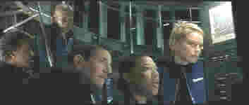

Sphere/C-,A
Warner/1998/135m/ANA,WS2.35
There's a moment in Sphere when the Samuel Jackson character comments that the sphere is empty, and indeed, the filmmakers have lived up to this observation: Sphere is empty. It's devoid of tension, the plot doesn't know where it going, and the direction is misguided.
Deep under the sea, a strange alien space craft is discovered and team of crack scientists is assembled from a long ago report made by psychiatrist Norman Goodman. Trouble is, Norman freely admits that the report was more a lark for pay than an honest analysis of the specialists needed to deal with a first alien encounter. Maybe encounter is the catch word here, because Sphere plays more like an underwater encounter session, led by the empty and artificial psychiatrist rather than an intellectual action film about first contact. One can't help compare this failure to the remarkable James Cameron film, The Abyss. Cameron's passion for detail makes that film consistently exciting, innovative, and cohesive. Absence of thought makes Sphere a big round brassy piggy bank without a coin in its belly. Common guys, the government assembles this team to go to the bottom of the ocean, none of them are qualified to even dive, and they casually don diving gear to investigate the big round craft. Okay, suspend disbelief, but hey, give me something to suspend it on!
Dustin Hoffman stars as psychiatrist Norman Goodman. This is the first time Hoffman's been under the water since his pool chores in The Graduate. This time out it's clear he hasn't learned to swim the waters of the action movie. Samuel Jackson rather sleepwalks through his role as mathematician Harry Adams . Sharon Stone is on hand to lend some feminine support. As biochemist Beth Halperin, she sports a nice new haircut, but has little to do. The best character in the film, government operative Harold Barnes, played by Peter Coyote, gets killed off much too soon. They should have killed the other crew members first.
Barry Levinson's the man in charge and he's out of his league here. When there were production delays on Sphere, Levinson, a savvy filmmaker of more personal films, turned out the terrific Wag the Dog. Looks like there were script problems that needed an alien intelligence to solve and Levinson's no help, bogging things down even further under water with poor editing and cheesy looking special effects that probably cost a billion dollars anyway.
 |
The gang goes underwater.©Warner |
The good news is that this is one of Warner's new experimental lower price point DVDs and a special edition to boot. An audio commentary featuring Dustin Hoffman and Samuel Jackson is the heart of the special edition. There's also a trailer, a making of featurette focusing on the special effects work, some TV spots and production notes. The video portion of Sphere is positively splendid. The seamless anamorphic transfer offers a wealth of detail, accurate colors, and the 5: surround sound is plenty dynamic.